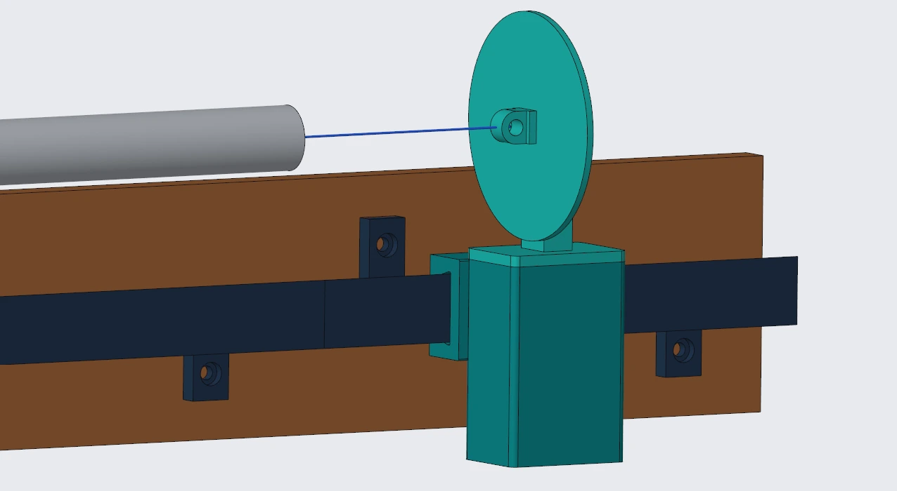

Undergraduate research · HBS Lab · Fall 2026
Modular TCP fabrication & characterization guide
While fabricating twisted and coiled polymer (TCP) muscles from silver-coated nylon for the HBS Lab's active cooling research, I encountered premature breaking and inconsistent coiling. During my literature review, I came across a study from the University of Calabria that used a guide to restrict unwanted movement of the hanging weight. This gave me a reason to explore a custom guide for the lab's existing fabrication setup. I was also tasked with making the rail reusable for future horizontal displacement characterization.
I compared sliding guides, rollers and a combined roller-and-track system. Since the deadweight was adjustable and the parts had to be 3D printed, I chose a simpler sliding carriage that could be removed without dismantling the setup. My main concerns were maintaining tension and preventing rotation and snagging.


Designing for rotational loads and friction
I referenced DC gearmotor specifications and the PLA material data sheet to establish a basis for sizing the guide. I used force and moment balances to estimate friction and bending from resisting rotation, with assumed transmitted torque, friction and effective printed stiffness for the preliminary calculations.
MTCP: transmitted torque; d: contact spacing; μ: friction coefficient; mg: moving guide mass; E: modulus; I: section inertia.
One preliminary load case predicted an added drag of 0.10 N (equivalent to 10.2 g of deadweight), excluding the moving guide's own mass. This helped me determine how much weight would need to be removed to maintain fabrication tension. The bending calculations guided my choice of rail geometry and clearance to reduce the risk of snagging.
After checking the first printed carriage, I kept the sliding fit and reduced the outer faces to prevent contact with the rail fasteners under side loading. The low predicted rail deflection supported my choice of 15% infill to reduce material cost, with loaded testing still needed to confirm stiffness. If deflection is excessive, I can increase the wall count or infill, or reduce the unsupported span. I reinforced the motor mount with 40% infill and six wall loops because it carries the motor and the tensile load from the muscle and hanging weight during fabrication.
Adapting the rail for horizontal characterization
Building on my mentor's previous work on active cooling of TCP actuators, I designed a second carriage that uses the same rail. A string connects the TCP inside a fixed cooling tube to a removable rectangular post. A circular plate provides a target for a laser displacement sensor mounted at a fixed reference near the cooling tube. By measuring changes in the distance between the tube and the plate, the sensor will track TCP contraction when voltage is applied and expansion during cooling. An opposing preload would maintain muscle tension throughout the cycle.
With the rail horizontal, the carriage's weight contributes to the normal load and sliding friction rather than directly adding to the TCP tension. I used the same force and bending principles as in the vertical design, but also considered the moment created by the elevated string attachment and the resulting movement of the laser target.
T: applied tensile load in the single-load model; h: height above the socket; L: supported engagement length. The deflection estimate assumes a fixed socket and a tip-loaded post.
I made the rectangular post's supported section longer than its exposed load height to reduce the contact reactions required to resist the moment. In this model, doubling the supported length halves the moment-induced lower reaction. The rectangular section prevents twisting within the socket, and the longer engagement helps limit tilting. I used the bending estimate to assess how much post deformation could affect the laser reading, while the original rail friction and clearance checks guided the carriage design.

Structural verification: Hand calculations vs. FEA
I 3D printed the initial rail and carriage and checked their sliding fit. My next step is to compare the hand calculations with SolidWorks FEA under matching loads and constraints. I want to check whether the vertical rail deflects enough to cause snagging and whether horizontal post bending affects the laser reading.
Displacement comparison
| Load case | Hand calc. | FEA | Difference |
|---|---|---|---|
| Rail lateral load | 0.00188 mm | ___ mm | ___% |
| Post bending | 0.01755 mm | ___ mm | ___% |
Preliminary benchmarks: simply supported rail with a 0.167 N center load; fixed-root post with a 1 N tip load. Both assume an equivalent modulus of 1 GPa.
Motor mount strength and factor of safety
Because the motor mount supports the motor and fabrication tension, I set a provisional minimum factor of safety of 3. I used the motor offset and the bracket section geometry to check nominal bending, then planned a separate assembly study to capture motor reaction torque, local stress concentrations and the screw connections.
P: motor weight plus axial TCP tension; e: distance from the section to the load; n: ratio of assumed allowable stress to nominal bending stress.
| Strength check | Hand calc. | FEA | Difference or target |
|---|---|---|---|
| Nominal bracket bending stress | 0.0479 MPa | ___ MPa | ___% |
| Nominal bending margin (n) | ≈ 209 | ___ | ___% |
| Full motor mount FOS | Not established | ___ | Target ≥ 3 |
Hand calculation uses an illustrative 150 g motor and 110 g equivalent tensile load, a 49 mm lever arm at the gusseted bracket section, and a provisional 10 MPa allowable stress. The nominal bending margin is a section-level estimate only, not the safety factor of the full mount. It excludes mount self-weight, motor torque, dynamic loads, fasteners and interlayer failure. Compare the nominal FEA bending stress at the same section under the same load; assess the full mount separately.
These analytical and FEA benchmarks use simplified material assumptions; neither directly resolves printed infill or interlayer adhesion. Loaded tests will determine actual stiffness, sliding resistance and laser measurement error.